Du weißt, dass da mehr in dir steckt.
Dein Geburtshoroskop als Spiegel. Ohne Vorwissen, ohne jahrelange Selbstsuche, ohne dich durch hundert Bücher zu lesen.
Ja, ich gehe durch mein Portal 🔥Sofortiger Zugang zu deinem Promptguide und Workbook
Du spürst es. Schon lange.
Dieses Gefühl, noch nicht wirklich angekommen zu sein. Bei dir. In deiner Energie. In dem, wer du wirklich bist.
Du sammelst Wissen. Liest. Hörst. Suchst.
Und trotzdem bleibt diese Lücke.
Weil Wissen nicht transformiert. Verkörperung transformiert.
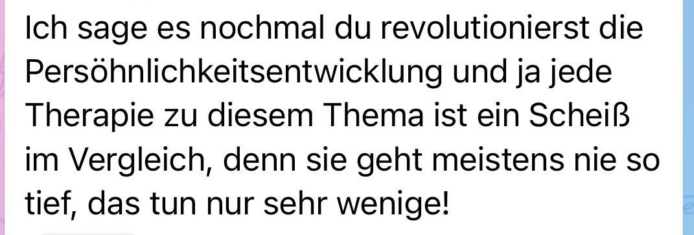
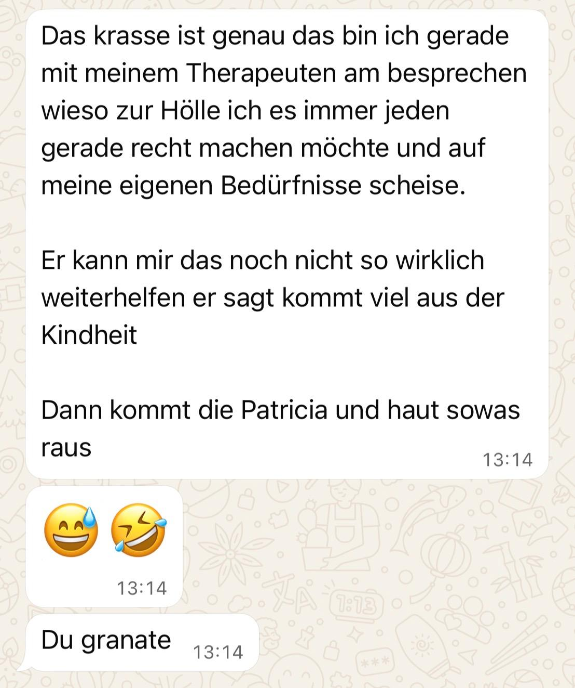
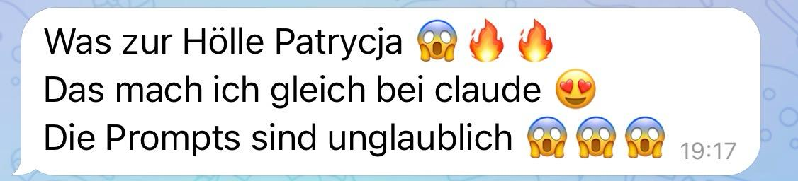
Dein Geburtshoroskop ist keine Prophezeiung.
Es ist ein Spiegel. Er zeigt dir, was du bisher nicht sehen wolltest.
Es zeigt dir, welche Energien dich tragen. Welche Potenziale in dir schlummern, die du noch nicht lebst. Welche Konditionierungen dich steuern, ohne dass du es merkst.
Mit dem richtigen Prompt und der KI als Spiegel bekommst du Antworten, die tiefer gehen als Jahre der Selbstreflexion.
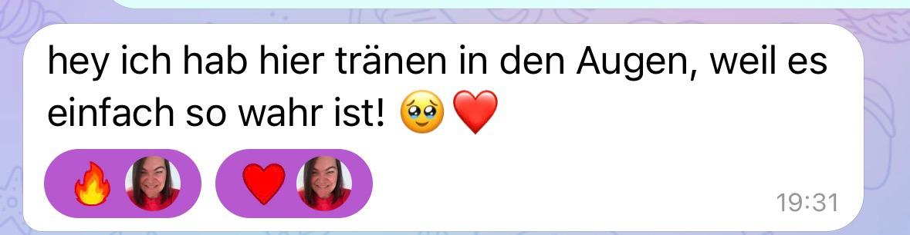
DeinAstroCode ist kein Kurs.
Es ist ein Portal. Du öffnest es. Du gehst durch.
Schicht für Schicht siehst du, wer du wirklich bist. Welche Energie wirklich deine ist. Was du die ganze Zeit schon wusstest, aber noch nicht aussprechen konntest.
In 4 Videos zeige ich dir, wie du deine Astrochart erstellst. Wie du sie liest. Wie du mit gezielten Prompts und der KI in eine Tiefe gehst, die du alleine kaum erreicht hättest.
Du brauchst kein Vorwissen. Nur dich, deine Chart und den Mut, wirklich hinzuschauen.
Dein Portal öffnet sich. Du verstehst, worum es hier wirklich geht. Um die Begegnung mit dir.
Einfach, schnell, ohne Registrierung. In wenigen Minuten hast du deine komplette Chart vor dir, mit allen Positionen, mit denen wir arbeiten.
Du siehst live, wie die Prompts arbeiten. Welche KI tiefer geht. Wie du aus einer Antwort eine echte Erkenntnis machst.
Wissen wird Verkörperung. Hier zeige ich dir, wie du das, was du siehst, in deinen Alltag holst. Tag für Tag.
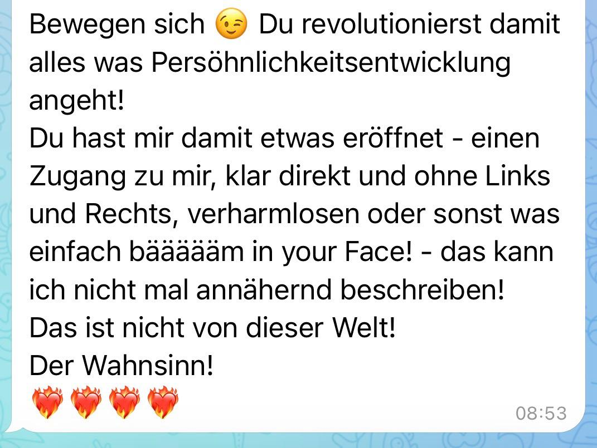
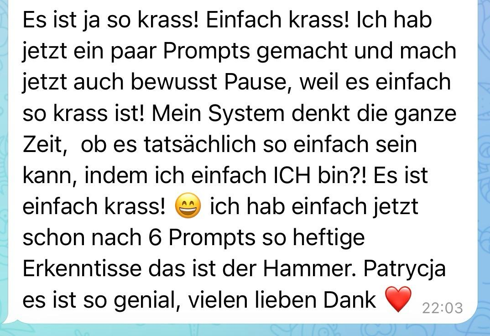
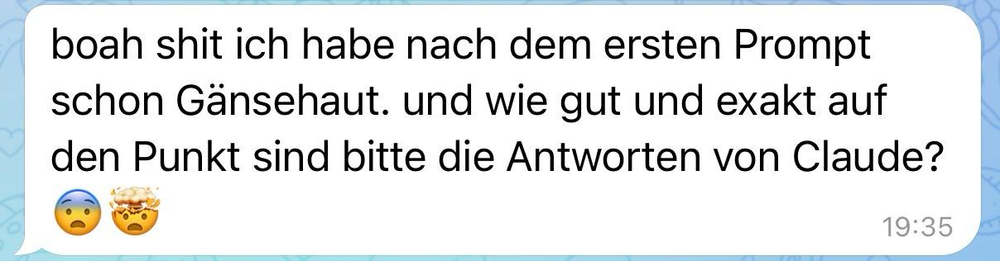
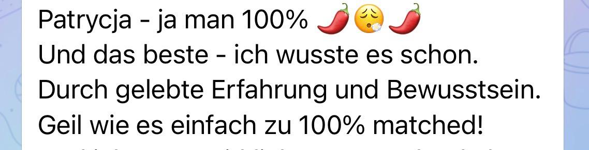
Statt 555€
Sofort nach deiner Bestellung hast du deinen Promptguide und das Workbook in der Hand. Dein Experiment beginnt sofort.
Einführungspreis 333€. Regulär 555€.
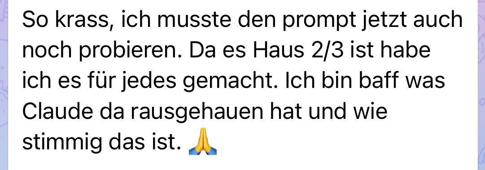
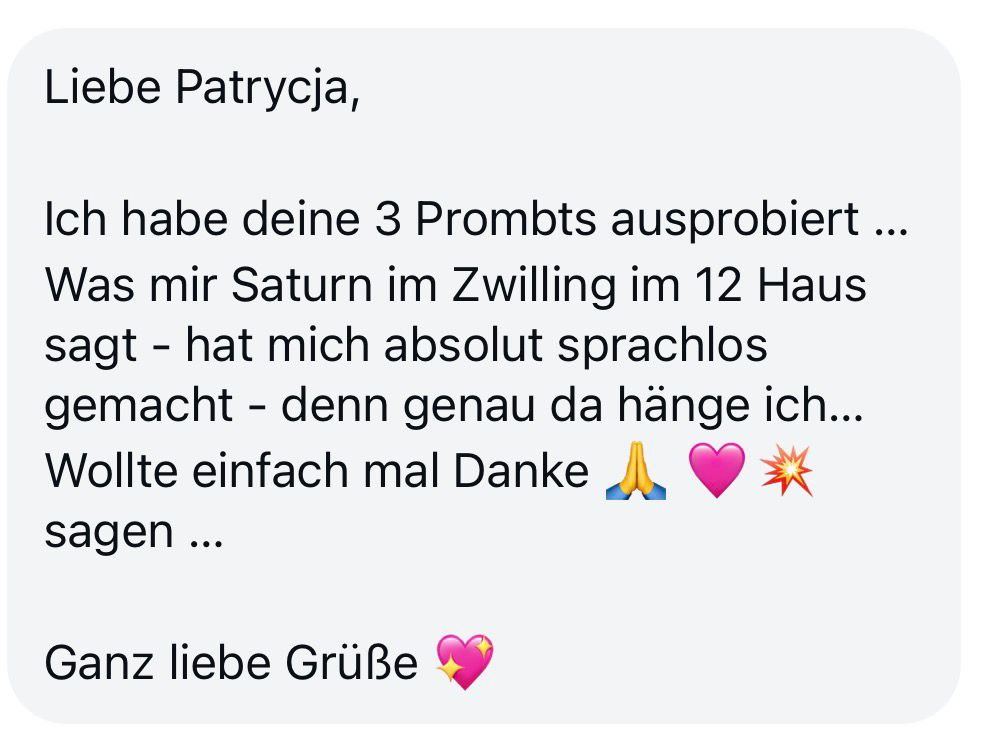
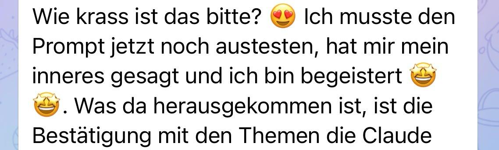
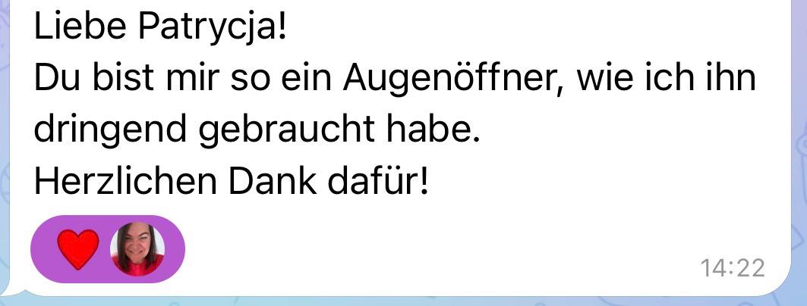
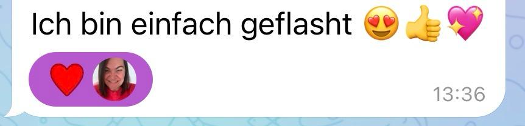
Du kannst stattdessen durchgehen.
Dein Experiment beginnt jetzt.
Ja, ich gehe durch mein Portal 🔥Nein. Modul 2 zeigt dir, wie du deine Chart in wenigen Minuten erstellst. Du startest bei null und gehst sofort in die Tiefe.
Sofort. Direkt nach dem Kauf hast du deinen Promptguide und das Workbook in der Hand und kannst loslegen.
Nein. Es gibt eine kostenlose Version von Claude. Meine klare Empfehlung ist Claude, weil die Antworten tiefer gehen.
Lebenslang. Du gehst durch dein Portal, sooft du willst.
Frag beim Standesamt deines Geburtsortes nach. Die Geburtszeit ist entscheidend für die genaue Chart.
Schreib mir: info@patrycja-nasri.de oder auf Instagram.